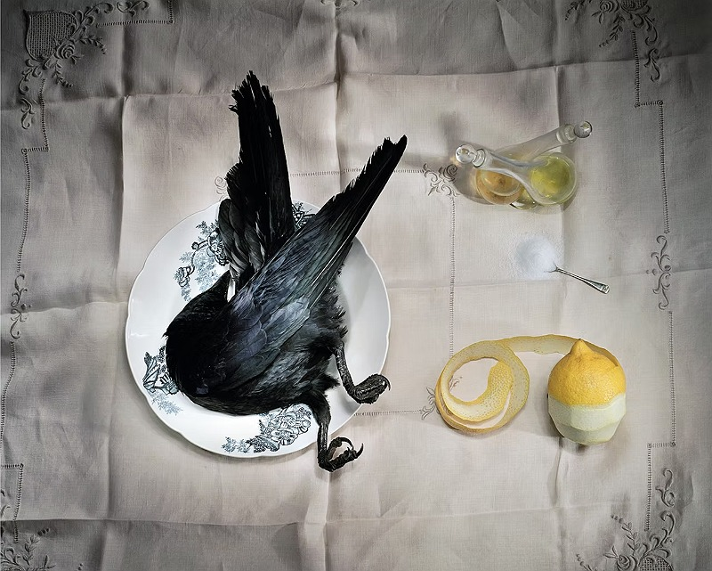
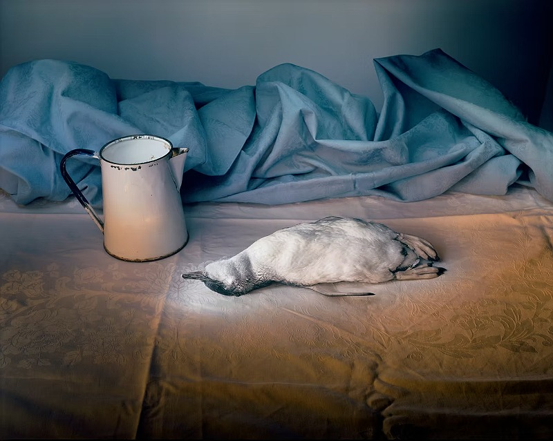

In my Image and Text Wayposts 1, I wrote about Marian Drew's work:
Marian Drew’s eerie scenes of dead Australian wildlife employ a highly unusual technique, in which Drew exposes the photographs over a long period of time in a dark room, using torchlight to ‘paint’ the images. Thus the element of time intensifies the concept of death within her work, and the photographs assume a Caravaggio-esque chiaroscuro quality.
I really love her photography, and the use of dead Australian wildlife is just so so creepy and weird. I like the idea of producing something a little more staged looking and using thiis light painting technique.
click here to learn more


make space!